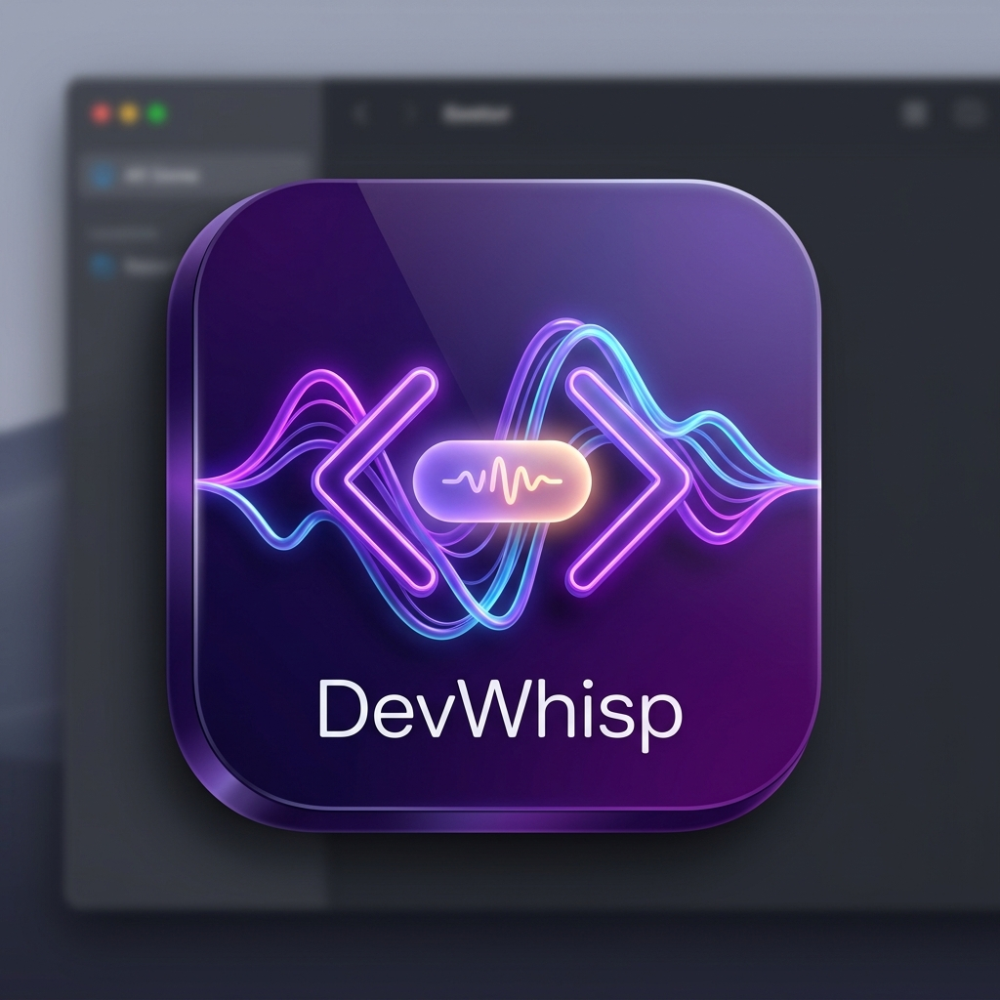
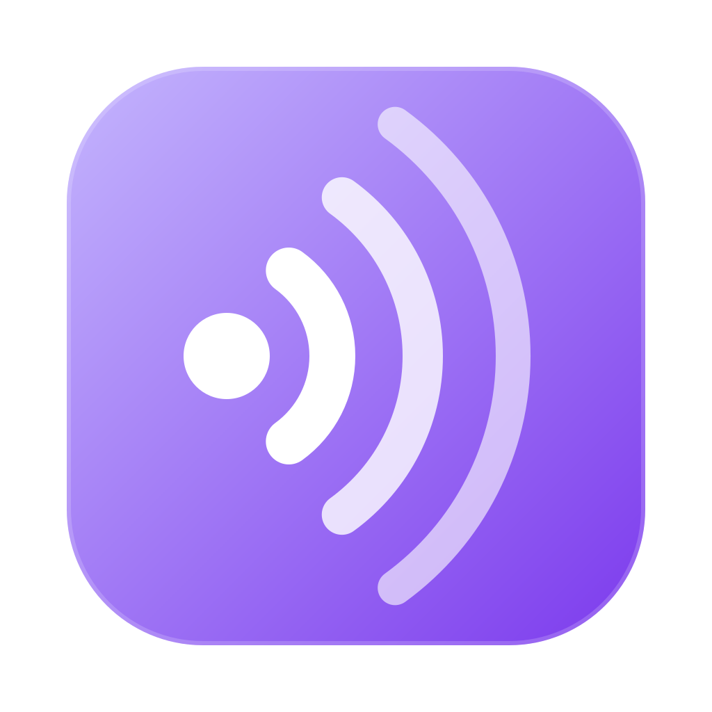

Icon + pill preview. Open this file after regenerating assets.

Soft Whisper: solid source + three arcs on the family violet tile. No mic stand — cleaner at small sizes.
Multi-size icon.ico embeds 16→256. Taskbar sizes use thicker arcs, 20–24× supersampling,
alpha crisp + white-lift so waves stay sharp at 16–32px.
Rebuild the app (npm run tauri:build or restart tauri:dev) to refresh the tray/taskbar icon.
Capsule is inset 10×8 px inside the transparent window so the left edge, glow, and mark are never cut off.

Canonical SVG: design/devwhisp-icon.svg · Raster pipeline: design/render_voicewaves_icon.py